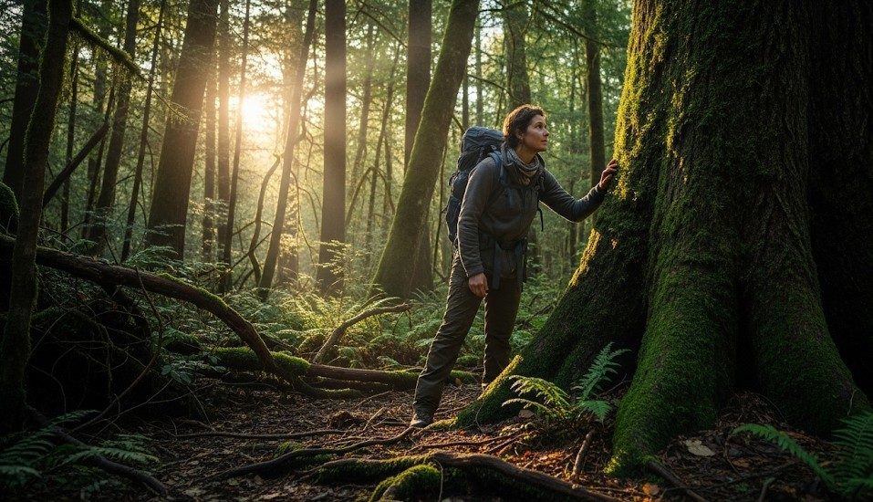

Navigating Without Map or Compass
Objective
Keep a reliable sense of direction when your tools are gone by reading terrain, sun, and wind patterns.
Scenario (Example)
Example: Lost the map in rolling hills; overcast moving in; need to return to a known road running east–west.
Direction Without Tools
- Sun/Watch: Sun marks east/west at rise/set; in mid-latitudes, use a watch method when visible (hour hand toward sun; bisect with 12/1).
- Wind & Weather: Note prevailing wind and storm direction if regional patterns are known.
- Terrain: Ridges run parallel; streams join larger water—follow to settlements.
Handrails & Backstops
Choose a linear feature (river, ridge, road cut) and move along it to a backstop like a larger river or highway.
Real Example
Hiker followed a descending creek to a service road, then turned west by late-day sun to reach the trailhead.
Checklist
- Landmarks every 10–15 minutes
- Impromptu pace marks (stones in pocket)
- Safe bailout direction agreed with group
Contingencies
- Fog/overcast → shorten legs, stay on one feature you can touch.
- Night → stop unless you have clear handrails and lighting.
After-Action
Practice the watch method on clear days so it’s second nature when clouds move in.
← Previous | All Articles | Next →